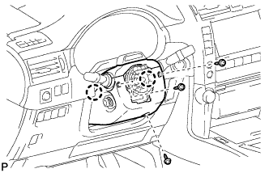

STEERING ANGLE SENSOR > REMOVAL |
| 1. PLACE FRONT WHEELS FACING STRAIGHT AHEAD |
| 2. DISCONNECT CABLE FROM NEGATIVE BATTERY TERMINAL |
| Condition | Waiting Time |
| Vehicle enrolled in G-BOOK system | 6 minutes |
| Vehicle not enrolled in G-BOOK system | 1 minute |
| 3. REMOVE STEERING WHEEL ASSEMBLY |
Remove the steering wheel assembly (Click here).
| 4. REMOVE STEERING COLUMN LOWER COVER |
|  |
Remove the 3 screws.
Detach the 2 claws and remove the steering column lower cover.
| 5. REMOVE STEERING COLUMN UPPER COVER |
 |
Detach the 4 clips.
Detach the claw and remove the steering column upper cover.
| 6. REMOVE SPIRAL WITH SENSOR CABLE SUB-ASSEMBLY |
Remove the spiral with sensor cable sub-assembly (Click here).